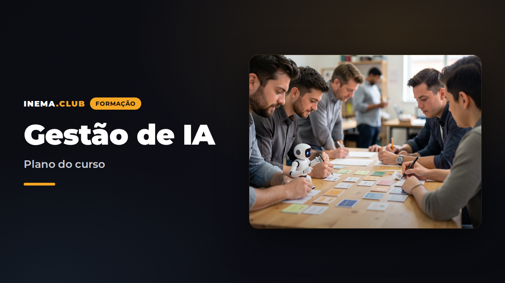

Gestão de IA
Um processo da empresa como unidade de trabalho. Pessoas e agentes com responsabilidades, autonomia e resultados mensuráveis.
Plano do curso INEMA

Esta página publica a proposta pedagógica: ementa, laboratórios, entregas e critérios do projeto final. As aulas completas, vídeos e base revisada de avaliação ainda serão produzidos. A ferramenta associada é um laboratório com simulações.
O percurso começa pelo trabalho.
Abra cada módulo para consultar o que será desenvolvido, a prática proposta e os critérios de aceite. Os itens abaixo são ementas, não aulas concluídas.
1Mapear o trabalhoEmenta planejada
Pergunta: qual processo merece ser o primeiro?
Aulas: 1.1 Processo, tarefa, agente e resultado; 1.2 Observação do trabalho de um bom funcionário; 1.3 Fluxo atual, entradas, decisões e exceções; 1.4 Baseline, meta e priorização por valor, viabilidade e risco.
Laboratório: entrevistar o dono do processo, acompanhar cinco casos e mapear o caminho normal e dois desvios. Medir volume, minutos por caso, retrabalho e tempo de espera. Cinco casos são exploração inicial, não uma amostra de avaliação final.
Entrega: canvas do processo atual e futuro, com recorte do piloto.
Critério de aceite: dono nomeado; entrada e conclusão inequívocas; indicador com denominador; baseline observado ou marcado como hipótese; exclusões explícitas.
Na ferramenta: cadastrar um processo e sua meta.
2Criar cargos digitaisEmenta planejada
Pergunta: que trabalho é responsabilidade de cada agente?
Aulas: 2.1 Missão e contrato de entrega; 2.2 Entradas, saídas e critérios de qualidade; 2.3 Pode, não pode e quando pedir ajuda; 2.4 Responsabilidade humana e divisão de trabalho.
Laboratório: escrever a ficha do qualificador e decompor três casos em atividades humanas e digitais.
Entrega: ficha de cargo, responsável e matriz de responsabilidades.
Critério de aceite: missão específica; saída verificável; ações proibidas concretas; responsável por qualidade e exceções.
Na ferramenta: criar agente vinculado ao processo.
3Contratar modelos e agentesEmenta planejada
Pergunta: qual configuração entrega o trabalho exigido?
Aulas: 3.1 Modelo, agente, workflow e runtime; 3.2 Critérios de seleção: qualidade, latência, custo e requisitos dos dados; 3.3 Comparação com o mesmo conjunto de casos; 3.4 Estratégias de fallback e dependência de fornecedor.
Laboratório: comparar duas configurações sobre os mesmos 20 casos exploratórios; registrar saídas, erros, custo e tempo. Esses casos não substituem o conjunto final de validação.
Entrega: parecer de seleção com versão, limitações e alternativa.
Critério de aceite: decisão sustentada por casos e restrições do processo, sem ranking genérico de modelos. Preços e condições são conferidos nas fontes do fornecedor no momento do laboratório.
Na ferramenta: registrar modelo e versão do agente; custos reais entram no runtime futuro. No MVP, valores de execução são simulados.
4Treinar com contexto e SkillsEmenta planejada
Pergunta: como transformar experiência operacional em instruções reutilizáveis?
Aulas: 4.1 Procedimentos, exemplos e rubricas; 4.2 Conhecimento recuperável e fontes; 4.3 Skills: gatilho, entradas, passos e saída; 4.4 Memória de caso, memória operacional e retenção; 4.5 Qualidade e conflitos nas fontes.
Laboratório: separar ICP, catálogo, regras comerciais e exemplos em instruções, base de conhecimento e duas Skills. Criar uma política de memória com o que guardar, por quanto tempo e quem pode corrigir.
Entrega: pacote de contexto versionado, duas Skills e política de memória.
Critério de aceite: cada documento tem dono e versão; Skill tem critérios de entrada e saída; dados desnecessários são excluídos; teste não é usado como exemplo de treino.
Na ferramenta: registrar referências de contexto e Skills na ficha. Arquivos e recuperação de conhecimento ficam para a fase integrada.
5Dar ferramentas e integraçõesEmenta planejada
Pergunta: como o agente age nos sistemas da empresa?
Aulas: 5.1 APIs, conectores e MCP como meios de acesso; 5.2 Leitura versus escrita e escopo mínimo; 5.3 Contratos, validação, idempotência e tentativas; 5.4 Credenciais no servidor, ambiente de teste e evidência da ação.
Laboratório: desenhar uma consulta de CRM e uma atualização aprovada, incluindo campos permitidos, timeout, erro e chave contra duplicação. Executar em ambiente de teste apenas quando houver integração disponível.
Entrega: contrato de duas ferramentas e plano de integração.
Critério de aceite: sem segredo em prompt ou navegador; escrita delimitada; repetição não duplica ações; falha encaminhada com contexto.
Na ferramenta: descrever ferramentas autorizadas. O MVP não conecta CRM, e-mail, ERP, APIs nem MCPs.
6Definir autonomia e permissõesEmenta planejada
Pergunta: o que pode acontecer sem aprovação?
Aulas: 6.1 Níveis 0 a 4; 6.2 Autonomia por ação; 6.3 Critérios de promoção e rebaixamento; 6.4 Aprovação vinculada à proposta e prazo; 6.5 Pausa e reversão.
Laboratório: aplicar níveis a cinco ações; construir uma matriz ação × risco × aprovação × responsável. Simular uma tentativa proibida e uma mudança após aprovação.
Entrega: política de autonomia e checklist de promoção.
Critério de aceite: ações críticas preservam decisão humana; política não depende apenas do prompt; promoção exige evidência e responsável.
Na ferramenta: iniciar em nível baixo, avaliar e registrar promoção de um nível por vez. As travas locais são didáticas.
7Criar equipes multiagentesEmenta planejada
Pergunta: quando separar responsabilidades melhora o processo?
Aulas: 7.1 Quando um workflow ou um único agente basta; 7.2 Especialização e contratos de passagem; 7.3 Supervisor, dependências e orçamento; 7.4 Condições de parada e prevenção de loops.
Laboratório: representar pesquisador → qualificador → CRM; definir saída de cada etapa, evidência compartilhada, limite de tentativas e responsável final.
Entrega: desenho da equipe e contratos entre cargos.
Critério de aceite: cada agente tem motivo para existir; supervisor não amplia permissões; tarefa tem limite de custo, tentativas e prazo.
Na ferramenta: organizar cargos pelo processo. Orquestração multiagente real é parte do roadmap, não do simulador.
8Supervisionar e tratar exceçõesEmenta planejada
Pergunta: como o gestor age quando o fluxo normal não basta?
Aulas: 8.1 Caso normal, duvidoso e crítico; 8.2 Fila, prioridade, responsável e prazo; 8.3 Pacote de evidências e decisão; 8.4 Incidentes e interrupção; 8.5 Rotina diária de supervisão.
Laboratório: resolver casos de dado incompleto, pedido fora da política e risco crítico; justificar aprovação ou devolução. Medir espera e carga de revisão.
Entrega: matriz de exceções e roteiro de atendimento a incidente.
Critério de aceite: nenhuma exceção fica sem dono; aprovar, devolver e interromper são distintos; decisão deixa justificativa.
Na ferramenta: simular execução, revisar a pendência e registrar decisão humana.
9Evals, KPIs, custos e ROIEmenta planejada
Pergunta: a operação entrega valor suficiente para avançar?
Aulas: 9.1 Conjunto representativo, gabarito e rubrica; 9.2 Correto, aceitável, incorreto e crítico; 9.3 Versões, regressões e separação entre treino e teste; 9.4 Acerto, autonomia, intervenção e tempo; 9.5 Custo total, capacidade liberada e ROI estimado.
Laboratório: preparar 100 casos de referência com diversidade e casos difíceis; avaliar a versão candidata; calcular custo por caso e capacidade liberada. Justificar tamanho de amostra e limitações conforme o risco.
Entrega: relatório de avaliação e parecer econômico, com planilha de cálculo.
Critério de aceite: denominadores claros; erros críticos separados; custo humano incluído; simulação não é apresentada como receita ou economia realizada; parecer registra incertezas.
Na ferramenta: registrar casos esperados/produzidos, classificação humana e indicadores calculados. O parecer não é gerado por IA no MVP.
10LOOP-R e melhoria contínuaEmenta planejada
Pergunta: como melhorar sem perder o controle da operação?
Aulas: 10.1 Executar, observar e medir; 10.2 Causa, hipótese e mudança; 10.3 Teste comparativo e validação; 10.4 Promoção gradual e reversão; 10.5 Gestão do portfólio de processos.
Laboratório: usar uma exceção para propor melhoria, registrar candidato e evidência, comparar com baseline e deliberar. Desenhar monitoramento e reversão.
Entrega: dossiê LOOP-R e plano de 30 dias da operação.
Critério de aceite: mudança não é aplicada por feedback isolado; teste antecede validação; humano autoriza promoção; versão anterior permanece identificada.
Na ferramenta: registrar problema, hipótese, evidência e evolução do experimento; atualizar o agente separadamente e reavaliar a nova versão.
Proposta da formação INEMA
Formar gestores capazes de transformar um processo real em uma operação híbrida de humanos e agentes, com cargos, contexto, ferramentas, limites, supervisão, avaliações, custo e melhoria contínua.
Público principal: gestores de áreas, donos de pequenas e médias empresas, líderes de operações e profissionais que implantarão IA nas empresas. A trilha central não exige programação; laboratórios de integração podem ser feitos com um parceiro técnico. A formação não promete certificação profissional regulada nem resultados financeiros garantidos.
Formato proposto: 60 horas em 10 semanas, com 20 horas de aulas orientadas, 30 horas de laboratório e 10 horas de projeto e revisão. Cada módulo ocupa 6 horas: 2 de conteúdo, 3 de prática e 1 de consolidação do projeto. A carga é uma proposta editorial, ajustável após a primeira turma.
Pré-requisitos: acesso autorizado a um processo e a seu responsável, conhecimento básico da operação, dados anonimizados ou sintéticos para os exercícios e disponibilidade para medir o estado atual. Uso de ferramentas pagas não é requisito para os exercícios de gestão; um piloto integrado dependerá dos sistemas escolhidos pela empresa.
Caso condutor: qualificação de 300 leads por semana. Cada aluno aplica os mesmos artefatos ao próprio processo. Todos os números de demonstração da ferramenta são fictícios.
Resultados de aprendizagem
Ao concluir, o participante deverá conseguir:
- Escolher e mapear um processo com baseline e meta mensurável.
- Escrever cargos digitais e justificar o uso de um ou vários agentes.
- Comparar modelos em uma avaliação própria, incluindo custo e restrições.
- Organizar conhecimento, Skills, memória e ferramentas com limites claros.
- Desenhar autonomia progressiva e decisões humanas por ação e risco.
- Operar uma fila de exceções e reconstruir o histórico de um caso.
- Medir qualidade, custo total, tempo e trabalho autônomo sem confundir teste com produção.
- Propor, avaliar e promover melhorias com reversão planejada.
Projeto final — uma operação híbrida revisável
O aluno apresenta um processo real, ou uma simulação explicitamente identificada quando não houver acesso à empresa. A apresentação inclui:
- Diagnóstico, baseline e objetivo empresarial.
- Fluxos atual e futuro, dono e responsabilidades.
- Fichas de cargos, contexto, Skills e política de memória.
- Contratos de ferramentas e matriz de autonomia.
- Supervisão, exceções, orçamento e interrupção.
- Conjunto de referência, rubrica e relatório por versão.
- Indicadores de qualidade, tempo, custo total e capacidade liberada.
- Um ciclo LOOP-R documentado, plano de promoção e reversão.
- Demonstração de um caso normal, um duvidoso e um crítico.
Rubrica (100 pontos): processo e resultado 15; cargos e contexto 15; ferramentas e permissões 15; supervisão e exceções 15; avaliações e métricas 20; LOOP-R e operação 15; clareza das evidências 5.
Conclusão proposta: pelo menos 75 pontos e atendimento a todos os critérios obrigatórios: dono humano identificado, ações críticas delimitadas, evidência de avaliação, exceções com destino, dados de demonstração identificados e plano de reversão. O certificado registra conclusão da formação; aprovação pedagógica não autoriza automaticamente produção na empresa.
Materiais a produzir
| Material | Uso | Estado nesta entrega |
|---|---|---|
| Plano pedagógico e método | Orientar autoria e turma | Documentados |
| Templates de processo, cargo, Skill, avaliação e LOOP-R | Entregas do aluno | Disponíveis em TEMPLATES.md |
| Ferramenta local | Laboratório de gestão | MVP funcional com simulação |
| Aulas completas e roteiros de vídeo | Ensino | Próxima etapa editorial |
| Apostila e páginas HTML INEMA | Leitura | Próxima etapa editorial |
| Base de 100 casos revisados | Avaliação final | A produzir e revisar; não substituir por repetições de exemplos |
| Conectores e runtime | Piloto empresarial real | Roadmap técnico |
Plano de produção do curso
- Validar recorte com gestores e selecionar um processo piloto autorizado.
- Produzir módulos 1 e 2, templates e cinco casos de descoberta.
- Pilotar o laboratório local com uma turma pequena; observar dúvidas e tempo por entrega.
- Produzir módulos 3 a 8 a partir das dificuldades observadas e do ambiente de integração escolhido.
- Curar os 100 casos e revisar a rubrica com alguém que domina o processo.
- Produzir módulos 9 e 10 e conduzir banca do projeto.
- Ajustar carga, exemplos e ferramenta com base nas evidências da turma.
O currículo usa ferramentas como meios. Atualizações de modelos ou fornecedores devem trocar exemplos e laboratórios sem alterar a espinha dorsal do método.
Materiais disponíveis agora
Baixe os arquivos para consultar ou adaptar ao processo da sua empresa.